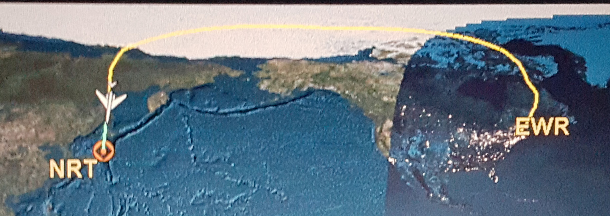
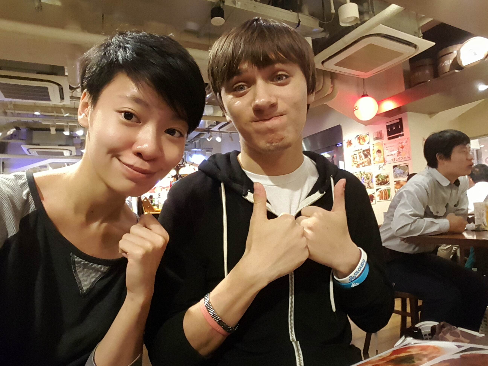
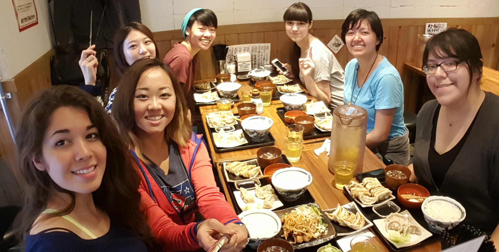
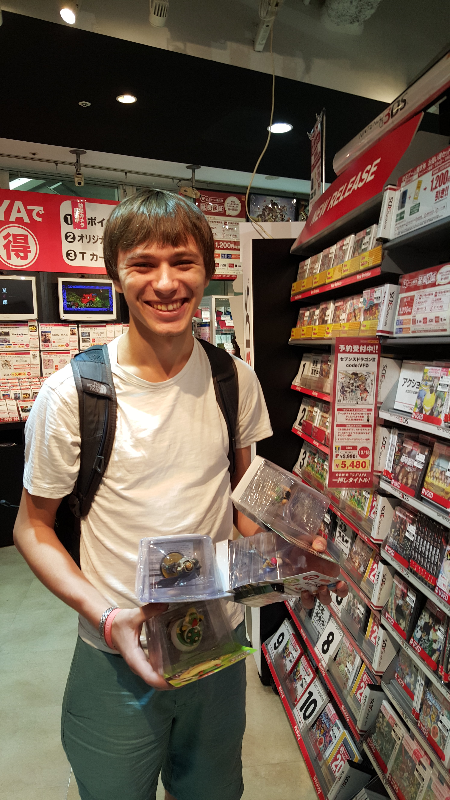
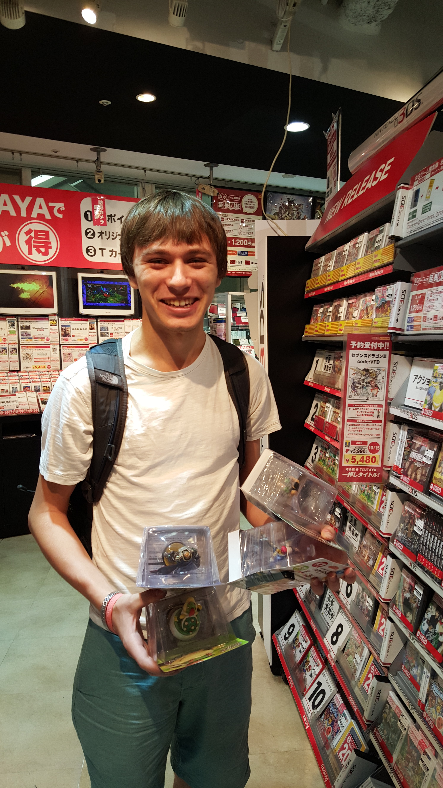
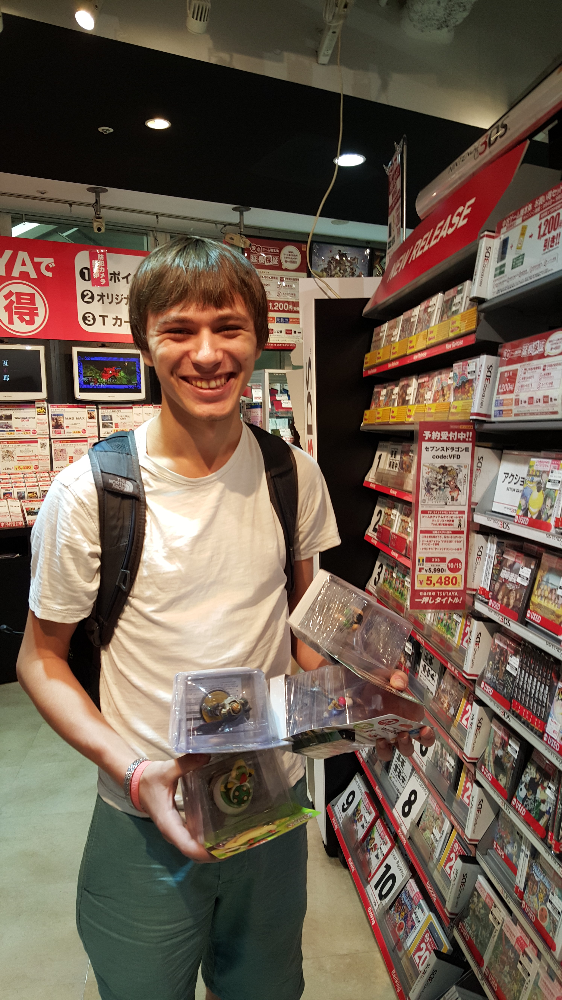
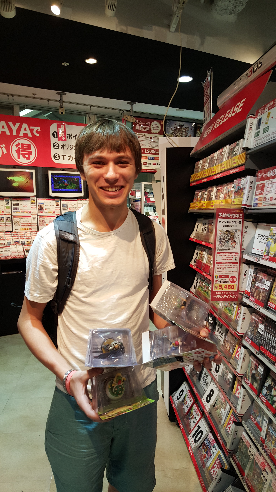
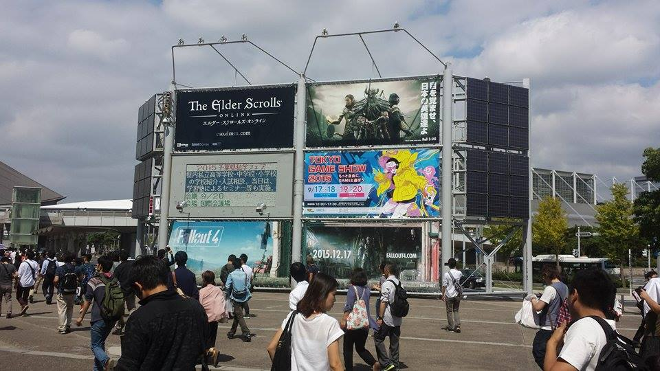
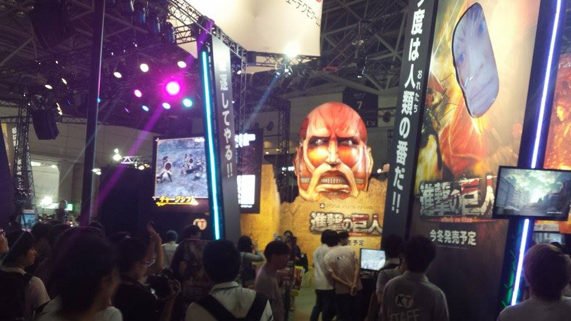
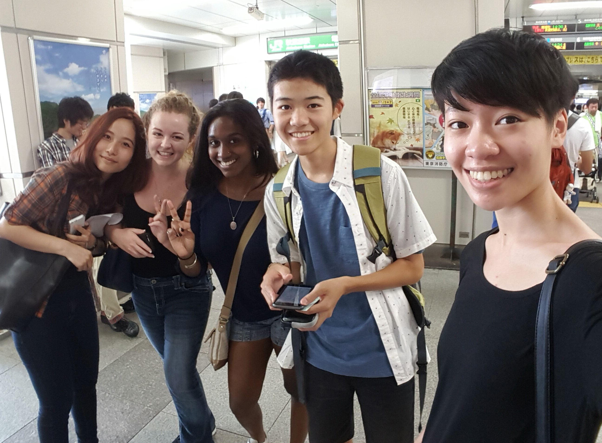

September 14th, 2015
Alex
Not too much happened on Monday. Around 5 PM Kevin and I left for Nakano. There’s a giant outlet mall there called the “Nakano Broadway” that we hadn’t been to before so we decided to check it out. We didn’t end up buying anything so we just went to get some udon for dinner then went home.
Mindy
I left for Newark around 7:20 after some last minute packing. I arrived and went through customs with two checked bags and 2 carry on bags. The plane took off around 10:50am and we began the 13 hr 10 min flight. It was my first time flying out of the country and on an international flight. They give you blankets and food and things. I had noodles and crackers and cheese and lasagna. Everything hurt after sitting down for that long.
September 15th, 2015
Alex
I actually did nothing on Tuesday. Left the dorm once to get dinner but that was about it.
Mindy
I arrived at narita around 2 the next day. I went through immigration and then got my checked bags and then went through customs before exchanging some currency at the counter and meeting up with the CIEE people. We waited for more students and then got our bags to be delivered to the dorms. We migrated by bus to the hotel we would stay the first night in. I got food from the airport convenience store with some other students and then the hotel store where I bought a coin purse and checked out for the rest of the day. Jet lag too strong.
September 16th, 2015
Alex
Wednesday I had to go to Meiji campus to do an interview for my Japanese class. I just walked in and told them I knew no Japanese. They took my name down and said I was done so I left.

Mindy
I ate a buffet style breakfast at the hotel and met some more of the other students. We had the first orientation session where they gave us a bunch of rules and regulations and a schedule. It wasn’t really my thing. I headed out with the whole group (college students and gap years who just finished high school) to Narita-san temple which was a really cool place to explore and take photos. We ate lunch at a hotel on the way into Tokyo and stopped by CIEE to meet the rest of the staff and have more orientation. Then we went to dorms to meet the manager and understand (or rather just be fed) rules that allowed for no input. Floors were separated by gender and the number one rule was no boys on the girl’s floor which made me feel like I was back in the 1800s. Needless to say I was annoyed, but hey, the view from the roof is nice at least.
Alex with Mindy
I killed some time in Akihabara before meeting up with Mindy in Ikebukero. We just walked around to catch up and talk before coming back to Meidaimae to get some nearby yakitori to end the day.

September 17th, 2015
Alex
I came back to Meiji again to get the results of my interview and unsurprisingly, I was placed in the lowest level. Unfortunately, the class coincided with another class of mine so I found out I couldn’t take it.
Mindy
I woke up early to head back to dorms in time to leave for CIEE. They wanted to show the group how to commute to the school but I got lost and wound up in a very different station that had an awkwardly similar name, “fujimini” instead of “fujimidai” but I got to practice my japanese direction asking a lot. I finally just gave up and headed back into the city towards Sophia University for orientation. Orientation was followed by a talk about the university by an anthropology professor followed by a campus tour.
Alex with Mindy
I went back to the dorm for a few hours and then met up with Mindy in Shinjuku. We walked around some electronics stores to get her an ethernet cable. Then we went to a nearby dumpling place to satiate a craving I’ve had since I got to Tokyo. I downed two entrees of dumplings before paying and going home.
September 18th, 2015
Mindy
I filled out paperwork for resident card in the morning at the dorms and then finalized everything at the municipality building near our university. I went to lunch afterwards with some students. We had trouble finding an open place but finally stumbled upon a really good dumpling place which satisfied all of us.
Alex with Mindy
We met up at Hachiko in Shibuya to walk around and do some shopping. We found a Tsutaya electronics store where I found a gold mine of Amiibo figures. I was so happy to find the ones I most wanted plus another that Mindy had a field day of taking pictures. A few hours later we decided to head back to my dorm before planning dinner with Kevin. I suggested we go back to Shin-Okubo for some Korean Barbeque. We went so the same place as last time but Kevin and Mindy weren’t too hungry so it was up to me to eat all the food. About an hour later we were all really full and happy.
  
 

September 19th, 2015
Alex
On Friday a friend of mine told me about the “Tokyo Games Show”, a large gaming convention that was happening in Chiba. I decided I wanted to go but since I found out so late about it I had almost no sleep before having to wake up at 9 AM. We headed out and managed to get there by 11. Luckily the ticket lines were short but the convention was absolutely packed. It was hot, crowded, and just hard to get around anywhere. We saw some interesting games but I didn’t get to try any demos because the lines were so long. We stayed for about 3 hours before heading out to get lunch nearby. Then we took the hour and a half trip home. I was ridiculously tired so I just stayed in the rest of the night to get some sleep.

Mindy
Had more orientation and bystander intervention. I think the ciee staff are worried that I’ll cause trouble since I’ve been pretty upfront about my personality. Then there was a Tokyo scavenger hunt with a full day pass on JR lines around Tokyo. My group and I ran around the yamanote line for a few hours finding spots and quirks about Tokyo before returning to the ciee study center with a camera full of selfies. I took the train back to dorms before heading back out again for a bit.
